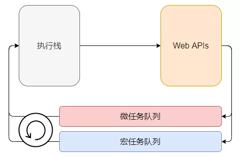

JavaScript 属于单线程语言，所有任务都跑在主线程上，若主线程阻塞，后续任务将无法执行。既然是单线程，那为何我们在使用过程中主观感知却是“多线程”？
主要由于 JavaScript 提供了 事件循环 机制，我们在发起异步请求或定时等操作后，处理完地回调会放入任务队列，在执行栈空时，处理任务队列中的回调，因此不会阻塞主线程，参考下图：
Node、Deno 环境同样使用事件循环机制进行处理，不过在模型上存在差异。关于事件循环的具体细节本文不会细说，但核心思想在于：任务队列 + 异步回调。
事实上，即使存在事件循环机制，某些任务依然会极大地占用主线程，例如近无限循环，会直接导致 CPU 占用 100%，此时后续的所有任务被阻塞，页面卡住，甚至失去响应，这在用户体验上是非常不友好的。但往往这样的任务不可避免，通常我们将其分为两类：
此时，多线程往往能起到关键性的作用，目前绝大多数现代计算机都拥有多核心，多线程处理能力，如果能物尽其用，必然是极好的。
查看逻辑处理器内核数量
navigator.hardwareConcurrency; // 16
有了上述的先决条件，我们就可以调用多线程处理这些阻塞型任务了。
现代主流浏览器，都已经支持了 Web Worker API，通过该接口，可以开启多线程。使用过程中需要注意以下几点：
一个非常简单的例子
index.html
<!DOCTYPE html>
<html lang="en">
<head>
<meta charset="utf-8" />
</head>
<body>
<p id="first"></p>
<p id="second"></p>
<p id="third"></p>
<script>
// 第一个文本
document.querySelector("#first").innerHTML = "First";
// 第二个文本
const second = document.querySelector("#second");
if (window.Worker) {
second.innerHTML = "...";
const worker = new Worker("worker.js");
worker.postMessage({
uuid: new Date().getTime(),
});
worker.onmessage = function (e) {
second.innerHTML = e.data;
};
worker.onerror = function (e) {
second.innerHTML = "Error occured!";
};
} else {
second.innerHTML = "Not supprot Web Worker!";
}
// 第三个文本
document.querySelector("#third").innerHTML = "Third";
</script>
</body>
</html>
worker.js
onmessage = function (e) {
const time = Math.random() * 3000;
// 模拟复杂计算
setTimeout(() => {
postMessage(`Second ${time.toFixed(0)} ms, ID is ${e.data.uuid}`);
}, time);
};
可以看出，主线程主要负责展示 UI，工作线程负责计算需要展示的值，那么问题来了：
对于问题 1，答案是肯定的，前端开启多线程只是为了扩展现代浏览器的计算能力，通常这一部分未挖掘的潜力是很大的，可以用来做很多事情，比如生成文件、复杂计算等。如果不这样做，很显然可以通过异步请求方式达到。
对于问题 2，如果在独立工作线程中声明多个 onmessage 函数，根据变量提升规则，只会有最后一个生效。那么想要执行不同的操作，除了新开一个工作线程外（失去意义），就只能在这个监听函数中通过 switch 或 if 进行返回，这样违反了单一职责原则。
// 若要在线程脚本中执行多个操作，通常需要这么写
onmessage = function(e) {
if (condition1) // do something
if (condition2) // do something
if (condition3) // do something
// ...
}
除了工作线程外，主线程也存在这样的问题，由于 Message 事件只能绑定一次，想要执行复杂的条件判断会让代码显得异常臃肿难看，那么 如何优雅的使用多线程开发 呢？
对于刚才提到的问题一，我们可以通过异步接口的形式返回想要的结果，得益于 ES6 中的 Promise 对象，通常我们对于异步的写法如下：
fetchSometing().then((res) => {
// do something
});
再比较 Web Worker 的写法：
worker.postMessage();
worker.onmessage = function (e) {
// do something
};
设想，我们是否可以将多线程写法进一步优化，将 postMessage 和 onmessage 封装成一个函数，该函数返回一个 Promise，通过调用，进行“异步”操作？
这当然是可以的。那么，这个函数必然在工作线程中，我们怎么去调用工作线程中的函数进行操作呢？
RPC：Remote Procedure Call (https://en.wikipedia.org/wiki/Remote\_procedure\_call)，远程过程调用，指调用不同于当前上下文环境的方法，通常可以是不同的线程、域、网络主机，通过提供的接口进行调用。
通过 RPC 方式，我们可以达到想要的目的。这里就会介绍本文的主角 Comlink (https://github.com/GoogleChromeLabs/comlink)！
没有条件，就要创造条件
Comlink 是由 Google Chrome Labs 开源出的项目，提供了前端多线程编程的 PRC 能力。
Comlink makes WebWorkers enjoyable.
请看该项目提供的最简单的例子：
main.js
// <script src="https://unpkg.com/comlink/dist/umd/comlink.js"></script>
async function init() {
const worker = new Worker("worker.js");
const obj = Comlink.wrap(worker);
alert(`Counter: ${await obj.counter}`);
await obj.inc();
alert(`Counter: ${await obj.counter}`);
}
init();
worker.js
importScripts("https://unpkg.com/comlink/dist/umd/comlink.js");
const obj = {
counter: 0,
inc() {
this.counter++;
},
};
Comlink.expose(obj);
很显然，Comlink 的 “RPC” 能力正是我们想要的，注意上述例子中关键的两点 Comlink.wrap(worker) 和 Comlink.expose(obj)，它通过这种方式，将工作线程脚本中的上下文暴露给主线程环境中，下面通过查看部分核心代码来了解其具体的实现方式。
往往业务中有这样的需求，导出 Excel 报表。通常技术实现由后端返回文件流，前端生成文件并下载，这也是考虑到性能问题。事实上，在多线程的加持下，纯前端也完全可以实现，以下为 Comlink 的代码写法（10 万数据）：
main.js
<!DOCTYPE html>
<html lang="en">
<head>
<meta charset="utf-8" />
<script src="https://unpkg.com/comlink/dist/umd/comlink.js"></script>
<script src="https://unpkg.com/xlsx/dist/xlsx.full.min.js"></script>
<script src="https://unpkg.com/file-saver/dist/FileSaver.min.js"></script>
</head>
<body>
<button id="btn">Download</button>
<p id="time"></p>
<script>
const button = document.querySelector("#btn");
const worker = new Worker("worker.js");
// 使用 Comlink 包装
const getWorkBook = Comlink.wrap(worker);
// 点击触发下载
async function download() {
button.disabled = true;
// 生成 xlsx 文档的 blob 数据
const blob = await getWorkBook(100000);
// 下载
saveAs(blob, "test.xlsx");
button.disabled = false;
}
button.addEventListener("click", download);
// 观察时间是否卡顿
setInterval(() => {
document.querySelector("#time").innerHTML =
new Date().toLocaleTimeString();
}, 1000);
</script>
</body>
</html>
worker.js
importScripts("https://unpkg.com/comlink/dist/umd/comlink.js");
importScripts("https://unpkg.com/xlsx/dist/xlsx.full.min.js");
// 模拟生成 Excel 并导出
const getWorkBook = (count) => {
const aoa = [];
for (let i = 0; i < count; i++) {
const arr = [];
for (let j = 0; j < 10; j++) {
if (i === 0) {
arr.push(`Column${j + 1}`);
continue;
}
arr.push(Math.floor(Math.random() * 100));
}
aoa.push(arr);
}
const wb = XLSX.utils.book_new();
const ws = XLSX.utils.aoa_to_sheet(aoa);
XLSX.utils.book_append_sheet(wb, ws, "Sheet");
// XLSX.writeFile 无法获取 DOM，故采用此写法
const data = XLSX.write(wb, { type: "array" });
return new Blob([data], { type: "application/octet-stream" });
};
Comlink.expose(getWorkBook);